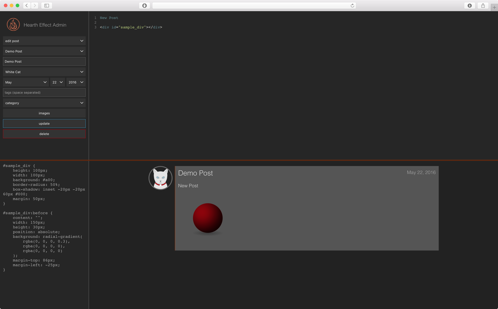
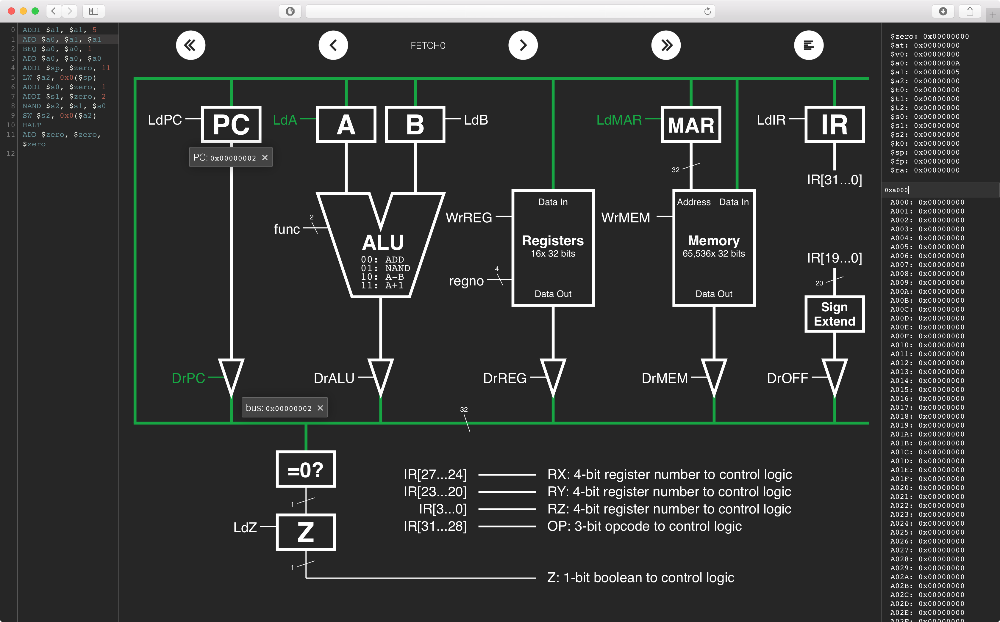
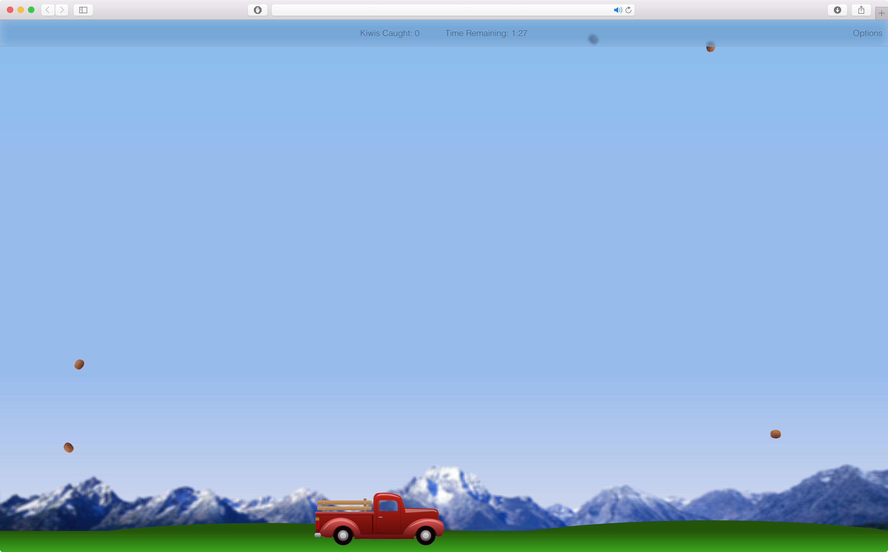

I'm Joshua Diaddigo – a senior at the Georgia Institute of Technology studying Computer Science with an emphasis on systems/architecture and information internetworks. Currently I am a Summer Associate at Stroz Friedberg in New York, NY.
Outside of my coursework, I spend a lot of time developing instructional materials for the course which I am Head TA at Georgia Tech (CS 1301 – intro to computing). I also have an inordinate amount of personal projects in the air at any given time which fill in the gaps in my productivity. Some of my favorites include a sleek blog content management system, a lightweight library containing some of my favorite javascript functions, and a site dedicated to pictures of my buddy, Jason, eating.
I got my first computer when I was 12 years old and immediately fell in love with it. I picked up web design shortly thereafter, and by my sixteenth birthday I was hired by PeachMac (now Simply Mac) where I became what was likely the youngest certified Apple Product Professional in the world. In the Summer of 2014, I interned with Tipping Point Gaming where I personally took charge of the development of a game selection interface that would soon be distributed to 40% of the casinos in Las Vegas, Nevada. The interface went into testing shortly after I left. I spent the Summer of 2015 in Chicago with kCura as a software engineering intern where I worked in the processing vertical of their eDiscovery platform. This Summer I'm in New York City working in digital forensics with Stroz Friedberg. That's the highlight reel, but you can definitely check out my resume for a more in depth timeline, or contact me if you have any questions.
I want to be your CIO.
No.
| email: | joshua@diaddigo.com |
| phone: | (770) 377–4047 |
| vcf: | Joshua C. Diaddigo.vcf |
A fully featured content management system for a blog that I am working on with a Belmont University marketing student, Suzanna Stapler. Backed by a SQL database, this CMS includes a very sleek HTML editor and implements security measures far beyond the typical scope of my work.

A Python module I wrote for TAs at Georgia Tech – specifically those teaching courses in Python. It includes helpful scripts such as an autograder that works directly with student homework submissions and a difference checker for identifying cheaters. These scripts have been used by a few different courses at Georgia Tech, and have sent a good number of students to the Office of Student Integrity.
A (pointless) website dedicated to pictures of my buddy, Jason, eating. It also accepts photo submissions so others can join the fun. Images submitted to the site are sent to me via MMS from my server, and I can moderate them simply by texting my approval.
A library I wrote to contain a lot of the functionality I often implement first while setting up a website. This is less practical than using jQuery (or any other library), but the purpose is to learn more in the development of my projects than I would if I used a library as a crutch. A good portion of the library is also targeted towards aesthetics which I have a history of prioritizing over performance when I can get away with it.
For this project, I took the technical lead in the group of five Georgia Tech TAs I was working with. The purpose for this simulator is a little specific to Georgia Tech coursework, but the goal was to help students learn the dynamic concept of how a processor works in a fittingly dynamic fashion as opposed to simply viewing diagrams on a page. The result is a web app that allows students to upload compiled microcode for the given LC-2200 ISA and watch their program execute on the processor by microstate or by clock cycle. Through this project, we introduced a lot of features that were not previously possible for students such as backstepping through the program or only tracking the information held in specific datapath elements. View a live demo of the project here (password is "demo").

cs1301.com is a study tool that I built for my students at Georgia Tech. Previous exam questions are searchable by topic and able to be answered and checked without ever leaving the browser. This not only includes multiple choice and code reading questions, but code writing questions as well. For the code writing portions, I am using a javascript-based interpreter (Skulpt) to check solutions client-side in addition to CodeMirror to keep the writing environment clean. Feel free to check it out, as the site is open to everyone.
Lab 4 is widely regarded as one of the harder assignments in CS 1301 for good reason. The goal for this assignment was that a student who earns a good grade should go from a working knowledge of Python to a minimal level of understanding of javascript. Students are given the majority of the code for a browser based game and asked to fill in the blanks. View the assignment page here.

The debugging guide is a resource for students at Georgia Tech to begin to understand different types of bugs and how to find them. The site includes sample programs with different types of errors. Students can edit/run their solution directly in the browser and receive immediate feedback. There is also an error reference for students to research the problem they are having and quickly find an explanation.